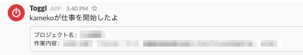

鉄は熱いうちに打て
=============================
TogglとSlackを連携した話¶
2017-12-15

サービスを探そう！¶
最初は無料で通知できるサービスが無いか探しました。 Zapier というサービスを見つけました。いろいろなサービスを連携するサービスのようです。
使っていたのですが、1ヶ月100回までしか無料で使えず、1日5回。普通の人なら足りそうですが、私は1日でいろんなタスクを行ったり来たりするので、すぐに限界が来ました。(´；ω；｀)
そんなわけで、探すのもめんどくさいので、自分でスクリプト書いて、PCのcronで動かせばいいじゃない！と思い、実装しました。
Togglのトークンを取得¶
Togglの自分のアイコンあたりを押したら、profile settingsにAPI tokenというのがあるのでコピーします。
slackのIncoming WebHooksのURLを取得¶
SlackのAppsあたりで「Incoming WebHooks」を探してPOST用のURLを探してください。
コード¶
Togglから、現在のタスクを取得して、Slackに書き込んでいるだけのコードです。ユーザー名とかべた書きですいません。
タスク継続中はslackに出ないように前のタスクをファイルの保存しています。それと違ったら、pushするぅ〜。って感じ。
cronから呼ぶためにshファイル作りました。
で、cronと思ったんですが、MacOSでは、LaunchAgentsというのを使うんじゃ。と何処かで見かけたので、LaunchAgentsにしました。 「~/Library/LaunchAgents/mytoggl.plist」に設置しています。 <key>StartInterval</key> に、 300秒（5分）に1回toggl.shを実行と設定しています。
動くと、こんな感じでSlackに表示されます。
イェア！
1日のまとめ取得とか、色々改造していきたいです。